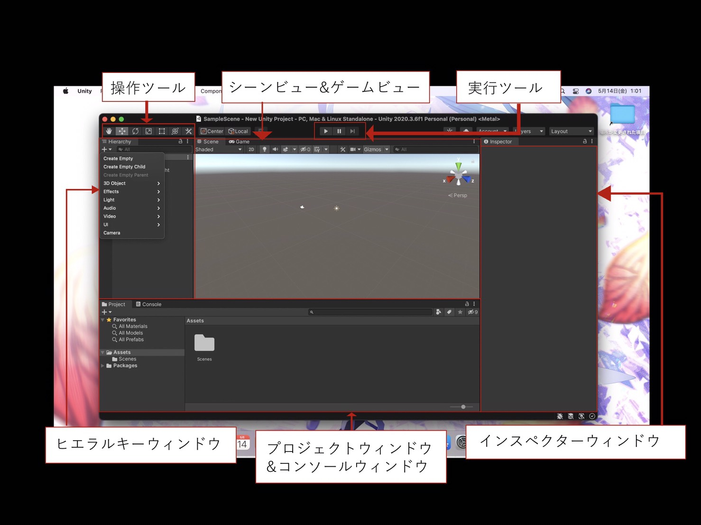
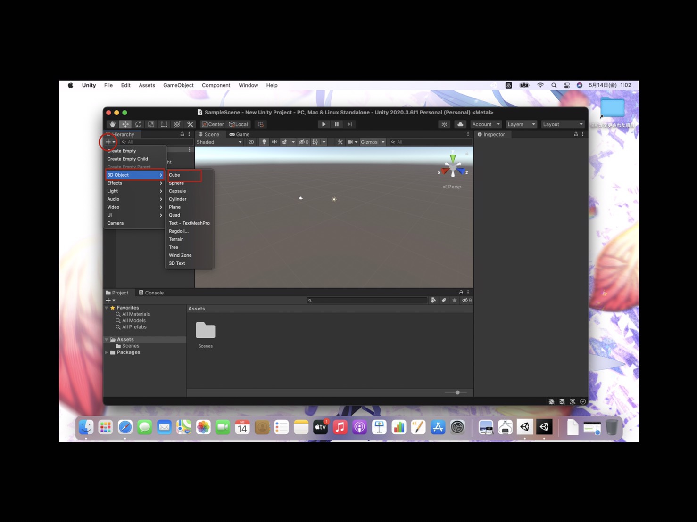
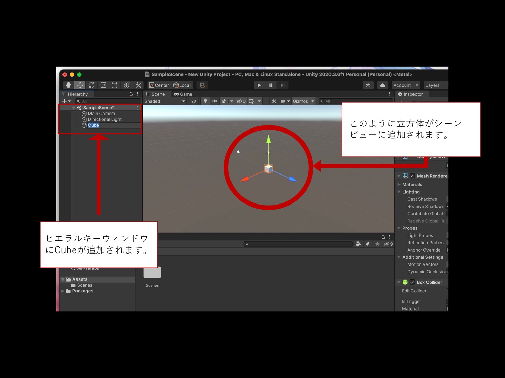
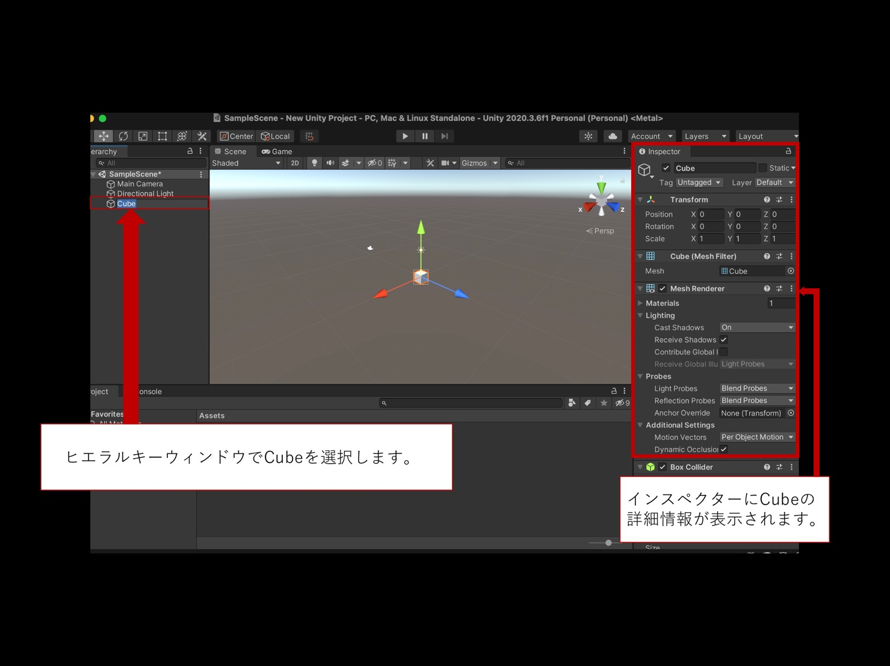
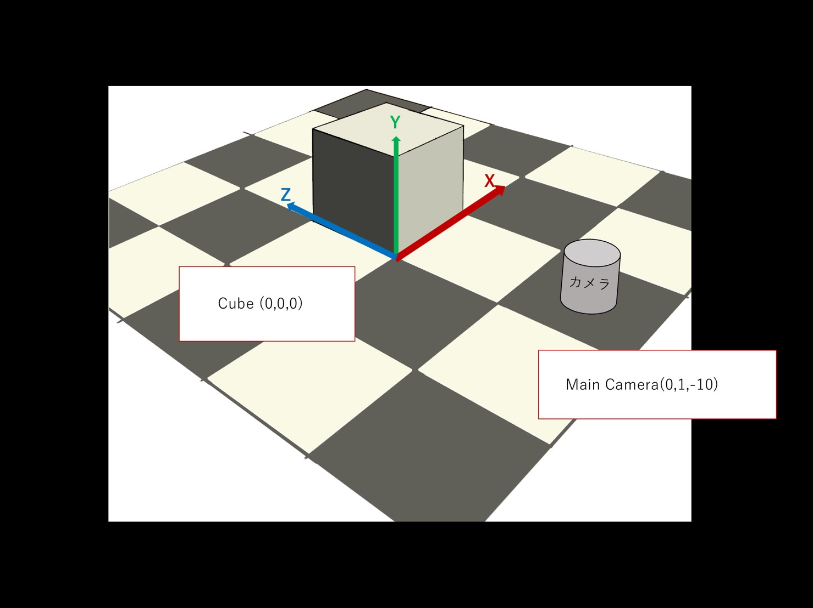
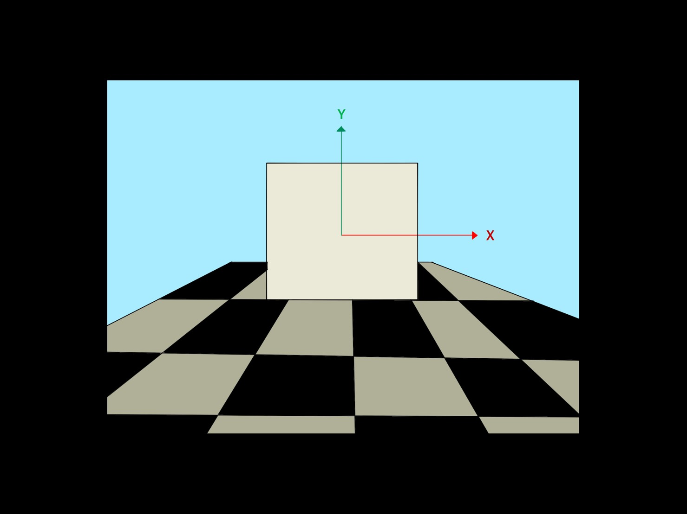
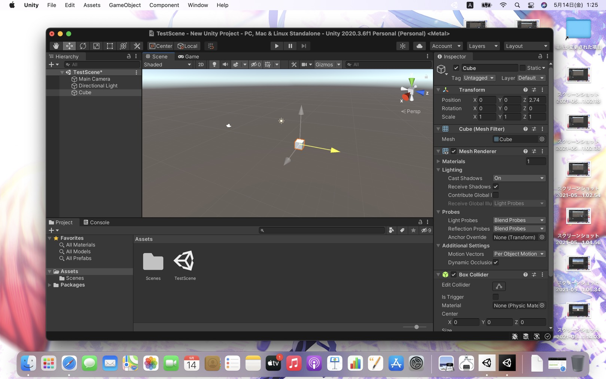
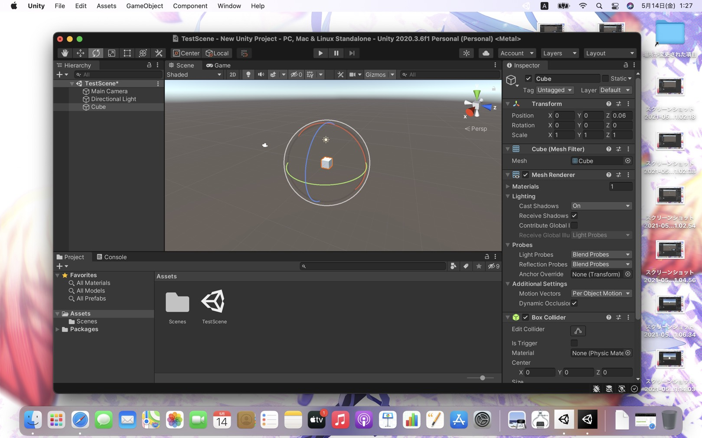

Unityの画面構成
・シーンビュー
ゲームを組み立てるためのメイン画面。素材を配置してゲームのシーンを作成するのが主な役割です。ビュー上のタブで、ゲームビューに切り替え可能です
・ゲームビューゲームを実行したときの見え方を確認するほか、ゲーム時の処理スピードや負荷のかかり方などを解析できる。
・インスペクターウィンドウ
シーンビューで選択したオブジェクトの詳しい情報が表示される。インスペクターでオブジェクトの座標・回転・スケール(サイズ)や色、形などを設定する。
・プロジェクトウィンドウ
ゲームで使う素材を管理する。このウィンドウに画像や音声などの素材をドラック&ドロップすることで、Unityにゲームの素材として追加することができる。
・コンソールウィンドウ
プログラムなどにエラーがある場合、その内容が表示される。プログラムによって任意の数値や文字列を表示されることができる。
・ヒエラルキーウィンドウ
シーンビューに配置したオブジェクトの名前を一覧で表示する。また、オブジェクト同士の階層構造を表示したり編集したりする。
・操作ツール
シーンビューに配置したオブジェクトの座標や回転、サイズを調整したり、シーンビューの見方を調整したりするためのツール
・実行ツール
ゲームの実行や停止を行うツール
立方体を追加する
画像のような状態で、ヒエラルキーウィンドウ内の+マークをクリックして、3D Object→Cubeを選択する。
すると、シーンビュー中央に立方体が表示されます。それに対応して、ヒエラルキーウィンドウに「Cube」の項目が表示されます。
立方体の情報を確認する。
ヒエラルキーウィンドウでCubeを選択すると、画面右側のインスペクターウィンドウにCubeの詳細情報が表示されます。
シーン中のオブジェクト(立方体)の位置は座標値(X・Y・Z)を使って表します。
インスペクターのTransform項目にあるPosition欄を見ると、「X」「Y」「Z」が「0」「0」「0」になっています。
これはオブジェクト(立方体)のXYZの座標がそれぞれ「0」であることを意味します。
※X・Y・Zがすべて「0」の点を原点と呼ぶ。
Unity3D座標系と見え方のイメージ
Unityで3Dゲームを作るときには、空間の把握が非常に大切です。
ゲームを作り始める前に、何をどこに配置するのかしっかり決めておかなければならない。
※上の画像は、シーンビューを表示しているときの座標の見え方です。
※上の画像は、ヒエラルキーウィンドウにあるMain Cameraを選択したときの見方です。
シーンビューで視点を操作する
ここでは、操作ツール内の✋マークを使っていきます。
視点のズームイン・ズームアウト
シーンのズームインとズームアウトはマウスホイールで行います。マウスホイールを手前or奥川に回すとできます。
MacのノートPCでは二本指で上下に動かすとできました。
視点の平行移動
操作ツールにある、✋マークを選択します。すると、マウスアイコンが手の形に変わります。
この状態で画面上をドラッグした方向に画面が平行移動します。
視点の回転
シーンビューで視点の位置を回転させる場合、macOSの場合は「option」キーを押しながら画面上をドラッグすると視点が回転します。
シーンビュー右上にある、シーンギズモの円錐をクリックすると、クリックした方向から眺めた視点になります。
オブジェクト(立方体)を変形する
ここでは、操作ツール内の「上下左右の矢印マーク」を使っていきます。
オブジェクト(立方体)を移動する
操作ツールにある、上下左右の矢印マークを選択します。
ヒエラルキーウィンドウでCubeを選択します。
X(赤)Y(緑)Z(青)いずれかの矢印にカーソルわ合わせて動かすと、それぞれの軸方向にオブジェクト(立方体)が移動します。
オブジェクト(立方体)を回転する
ここでは、操作ツールの🔄マークを使っていきます。
操作ツールにある🔄マークを選択します。
ヒエラルキーウィンドウでCubeを選択すると、立方体上のカーソルが円形に変わります。